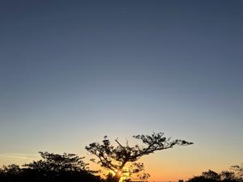
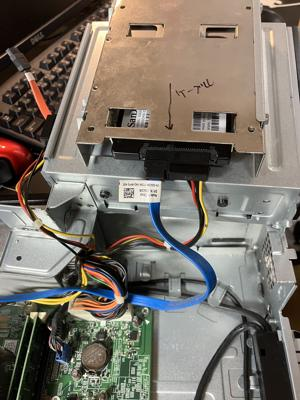
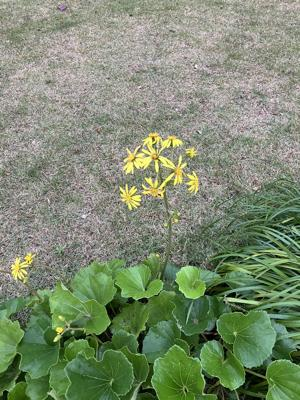

うるがいの話 ある日
最新: ＰＣ１号とうとう起動せず【うるがいの話 ある日】とは 一日だけのプログです
『うるがいの話』の最新一日だけのプログで、通信料が少なく経済的だ。カニの画像をクリックすると全ての日付が載る『うるがいの話』サイトを表示します
|
|
【うるがいの話】 うるがい(ｳﾙｶﾞｲ urugai)とは、『もずくがに』の名前でとても大きくなります。 |
|---|---|
|
|
【カミマヤーの話】 猫のことを方言でマヤーといいます。カミマヤー（kamimayaa）とは、神の猫のことです。 |
|
【たながぁの音楽】 たながぁ（ﾀﾅｶﾞｰ tanagaa）とは手長えびのことで、何種類かあり大きいのは車 エビぐらいになります。 |

|
【ぶながぁの話】 ぶながぁ(ﾌﾞﾅｶﾞｰ bunagaa)とは、赤い髪の毛、赤い身体、そして身長は１ｍ２０ｃｍ ぐらい、川の蟹を食べているの目撃された。場所は沖縄県国頭郡大宜味村のと ある村僕の隣近所に住んでいる爺さんから、聞いた話です。 |
|
|
【ギーマの話】 ギーマ(giima)とは、山原の里山に咲くスズランに似た、 花を付けます。実は食べられます、 気が付くと口の周りが紫になっています。 |
2024年12月26日 (木）ＰＣ１号とうとう起動せず
16:08

いろいろを努力をしましたが・・・、２０２４．０１月２４日の状態の
ＳＳＤがあったのでパソコンを分解し、再設置したもののダメだった。

代わりに押し入れに放置していた２０１７年０４．０３日に購入し、ｗ
ｉｎｄｏｗｓ１０からｗｉｎｄｏｗｓ１１に再インストール（２０２３
年７月２４日）したＰＣ２号を使う。ただ、アプリがほとんどないので
ある。
パソコンの安い時期を調べると、来年の３月に年に一度のデル感謝祭が
あるようなのでそこまでは一番性能の悪いＰＣ２号を使うこととする。
３台あって良かったかも。もうパソコン一台だけの生活は無理っすネ。
この、文書はＯｎｅＤｒｉｖｅ（ＯｎｅＤｒｉｖｅとは、Ｍｉｃｒｏｓ
ｏｆｔが提供するオンライン ストレージ サービスで無料で５ＧＢの
ストレージ容量を使用できる、ＰＣ３号とＰＣ２号で共有して使う）機
能を利用して、ＰＣ２号で文書を打ち込んだ。ん、以上
